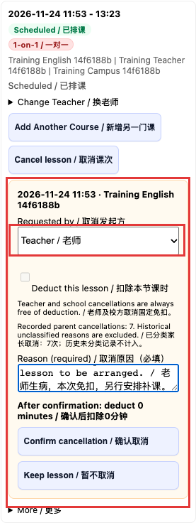
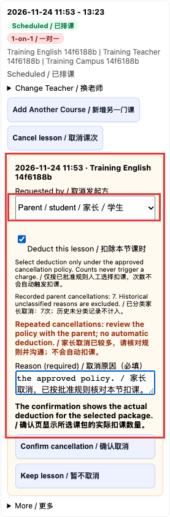
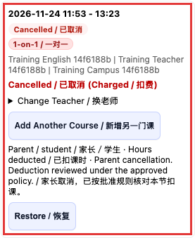

Web and mini program share the cancellation policy. Select the requester, enter the reason, review the deduction and verify the saved result.
Teacher / school cancellations never deduct student hours. Counts never trigger an automatic charge.
Web screenshots use isolated Admin and Finance training accounts. Native mini program steps were tested in WeChat Developer Tools against the isolated test system.
This guide does not create a new fee policy. Use the school’s approved policy for parent cancellations.
SGT MANAGE · 2026-11-21 · 教务与财务
先选择正确操作
Choose the correct action
操作步骤
取消课次：本节不再上课，原课程仍需留档。
改期：已经确定新时间，调整原课程。
删除误建课次：只用于重复或误建、未开始且没有教学／关联历史的未来课程。
恢复：原日期及时间重新生效，必须先核实是否仍可上课。
不要用删除代替老师请假。已取消课程仍保留记录；删除只在历史区留档。
Steps
Cancel lesson: The lesson will not take place; retain the original record.
Reschedule Existing Session: A new time is agreed; move the original lesson.
Delete mistaken lesson: Only remove a mistaken or duplicate unused future lesson.
Restore: Reinstate the original date/time after checking availability.
Do not use Delete as the standard action for teacher leave. Cancel retains the lesson; Delete removes it from the timetable and preserves recorded history.
SGT MANAGE · 2026-11-21 · 教务与财务
网页第1步：老师或校方取消
Web 1 · Teacher or school cancellation

Playwright · 隔离测试账户 / isolated training account
操作步骤 / Steps
教务进入 Students → 学生 → 日历或 Upcoming Sessions。
核对姓名、课程、日期和时间，点击 Cancel lesson / 取消课次。
Requested by选择 Teacher 或 School / management。
填写必填原因，例如“老师生病，本次免扣，另行安排补课”。
扣课选项会禁用。点击 Confirm cancellation，在确认框核对扣0分钟、0次。
Open Students → student → calendar or Upcoming Sessions.
Check the lesson and click Cancel lesson.
Select Teacher or School / management.
Enter the reason, e.g. “Teacher unwell. No deduction. Replacement lesson to be arranged.”
The deduction box is disabled. Click Confirm cancellation and verify 0 minutes / 0 lessons in the confirmation.
SGT MANAGE · 2026-11-21 · 教务与财务
网页第2步：家长取消与人工扣课
Web 2 · Parent cancellation and an explicit deduction

Playwright · 隔离测试账户 / isolated training account
操作步骤 / Steps
Requested by选择 Parent / student。
默认不扣课。仅在符合学校已批准规则时，勾选 Deduct this lesson / 扣除本节课时。
原因中写明取消事实和扣课依据。
点击确认按钮，系统先预检，再显示实际扣分钟或次数。
普通90分钟课扣90分钟；按次班课扣1次；月包按原有计费方式处理。
只勾选不会保存，也不会额外收取现金。取消次数只作沟通提醒。
Select Parent / student.
No deduction is the default. Select Deduct this lesson only under the approved school policy.
Record the cancellation and charging basis.
Click confirm. The system prechecks and shows the actual minutes or lesson count.
A normal 90-minute lesson deducts 90 minutes; a count package deducts one lesson; monthly packages retain their existing billing mode.
Ticking a box does not save or collect cash. The cancellation count is an advisory reminder only.
SGT MANAGE · 2026-11-21 · 教务与财务
网页第3步：确认已保存的结果
Web 3 · Verify the saved cancellation

Playwright · 隔离测试账户 / isolated training account
操作步骤 / Steps
取消成功后刷新或重新进入学生页面。
原课程应显示划线及 Cancelled。
查看发起方、原因，以及“已扣课时”或“不扣课时”。
在课包及取消报表复核实际扣课数量。
重复操作出现“已取消”时，先查结果，不要改用删除。
有错误信息时，本次操作未确认成功。保留错误内容交教务核查。
Refresh or reopen the student page after saving.
The original lesson should be crossed out and marked Cancelled.
Check the requester, reason and deduction label.
Verify the actual deduction in the package record and cancellation report.
If the lesson is already cancelled, review it instead of switching to Delete.
An error message means success has not been confirmed. Keep the error details for Operations to review.
SGT MANAGE · 2026-11-21 · 教务与财务
已有新时间：使用改期并通知家长
A new time is agreed · reschedule and notify
操作步骤
学生详情打开 Quick Schedule。
Mode选择 Reschedule Existing Session，选择原课程。
填写New Start及New Duration。
只改一节时选 This session only，核对后确认。
系统保留变更历史并建立改课通知。进入沟通中心，把最新安排实际发到原家长群。
上传发送截图，登记已发送，跟进家长／接送人确认。
已点名或已取消课程不能直接改期。先核对现有状态；不要删除历史绕过检查。
Steps
Open Quick Schedule on the student profile.
Choose Reschedule Existing Session and select the original lesson.
Enter New Start and New Duration.
Choose This session only for one lesson, then confirm.
The change is recorded and a notification task is created. Send the latest details to the original parent group.
Upload sending evidence, confirm it was sent and follow up on the parent / pickup person’s acknowledgement.
Marked or cancelled lessons need review first. Copying a notice is not the same as sending it.
SGT MANAGE · 2026-11-21 · 教务与财务
小程序：取消课程的完整步骤
Mini program · complete cancellation flow
操作步骤
以教务账号登录员工工作台，进入课表，打开具体课程。
找到“请假／取消”，核对或选择学生。
选择取消发起方，填写原因。老师、校方选项会固定关闭扣课。
家长取消仅按批准规则选择是否扣本节课时。
点击“预检请假／取消”，核对课程时间和实际扣课结果。
如有关联工单，核对后选择需要同步完成的工单。
点击“确认请假／取消”，在确认框再次核对并提交，然后重新打开课程核对结果。
Steps
Sign in to the staff workspace as Operations, open the timetable and the lesson.
Find the cancellation section and select the student.
Select the requester and enter the reason. Teacher / school requests disable deduction.
For parent requests, decide the deduction under the approved policy.
Run the cancellation precheck and review the time and actual deduction.
Select any related work orders to complete after checking them.
Confirm cancellation, review the final confirmation and reopen the lesson to check the saved result.
SGT MANAGE · 2026-11-21 · 教务与财务
点名入口：使用相同的取消规则
Attendance screen · the same cancellation policy
操作步骤
仅在需要由管理／教务在点名界面核对时使用。
选择EXCUSED后，必须选择发起方并填写原因。
老师、校方固定免扣。家长取消需要人工选择扣课。
第3次或第4次都不会自动扣课，历史未分类记录不计入家长取消次数。
核对分钟／次数，按页面要求复核并保存。
不要将取消误记为PRESENT或ABSENT。普通老师的事实点名权限没有因此扩大。
Steps
Use this lane when management / Operations needs to review attendance.
After selecting EXCUSED, select the requester and enter the reason.
Teacher / school requests are free of deduction. Parent requests require an explicit deduction choice.
Neither the third nor fourth cancellation automatically charges. Unclassified historical records are excluded from the parent count.
Review the minutes / count and save through the existing review process.
Do not mark a cancelled lesson PRESENT or ABSENT. Ordinary teacher attendance permissions have not been expanded.